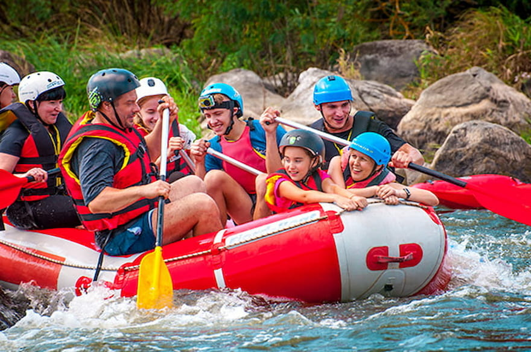
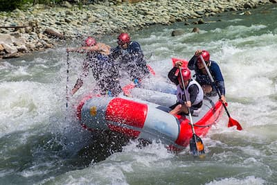
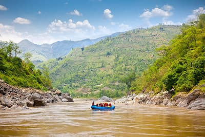

Designed for families, this rafting trip offers a gentle but thrilling experience on the river.
It's perfect for beginners or those with young children. The journey navigates through mild rapids and serene waters,
allowing participants to enjoy the scenic beauty of the surrounding landscape.
Along the way, there will be opportunities to swim, spot wildlife, and learn about the local ecosystem.
Safety is paramount, with experienced guides ensuring a fun-filled day for everyone.
Whitewater Excitement Expedition

This trip is tailored for adventure seekers looking to experience the adrenaline rush of whitewater rafting.
Participants will tackle challenging rapids, navigate tight turns, and feel the exhilarating speed of the river.
This journey is recommended for those with a good fitness level and a strong sense of adventure.
Skilled guides will provide comprehensive safety briefings and instructions, ensuring a thrilling yet secure experience.
It's an unforgettable adventure that tests limits and fosters teamwork.
Sunset Serenity Float

Ideal for those seeking a more relaxed and reflective experience,
the Sunset Serenity Float offers a peaceful journey down the river as the day transitions to evening.
Guests will enjoy the tranquility of the river while basking in the glow of the setting sun,
which paints the sky in vibrant colors. This trip is perfect for couples, photography enthusiasts,
and nature lovers. Along the way, guides will share insights about the natural and cultural history of the area.
The calm waters and stunning scenery provide a perfect backdrop for a serene evening.